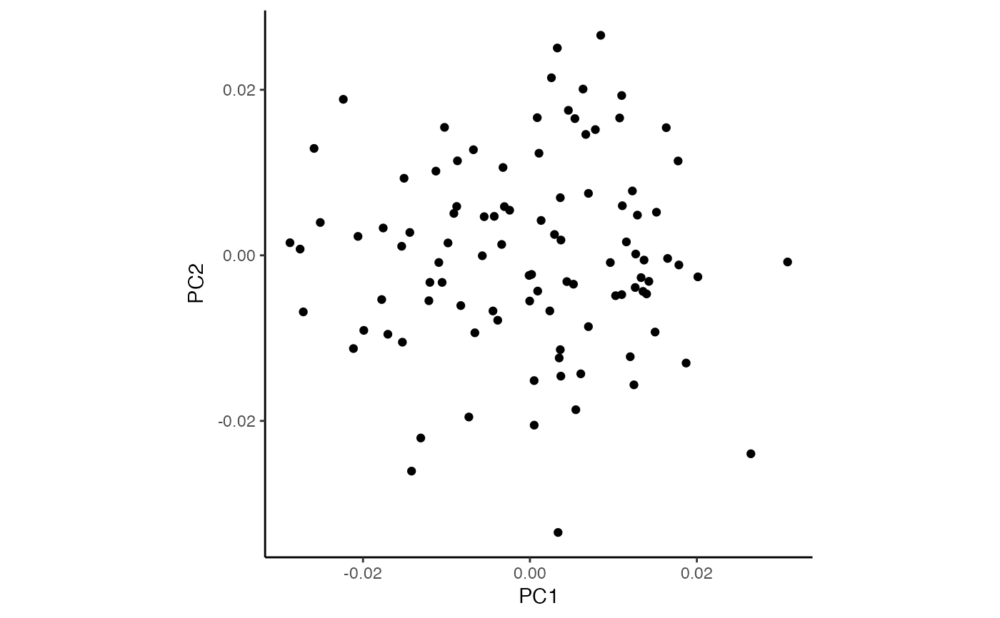

Compute standardized observations by dividing the observed values by their standard deviations based on the precision weights
Details
Weighted response by their standard deviation so that resulting values have approximately equal sample variance. This is a key property that improves downstream PCA and clustering analysis.
Examples
# set probability of each category
prob <- c(0.1, 0.2, 0.3, 0.5)
# number of total counts
countsTotal <- 300
# number of samples
n_samples <- 100
# simulate counts from multinomial
counts <- t(rmultinom(n_samples, size = countsTotal, prob = prob))
colnames(counts) <- paste0("cat_", 1:length(prob))
rownames(counts) <- paste0("sample_", 1:n_samples)
# run crumblr on counts
cobj <- crumblr(counts)
# Standardize crumblr responses
df_std <- standardize(cobj)
# Perform PCA on student transformed data
pca <- prcomp(t(df_std))
df_pca <- as.data.frame(pca$x)
ggplot(df_pca, aes(PC1, PC2)) +
geom_point() +
theme_classic() +
theme(aspect.ratio = 1)
